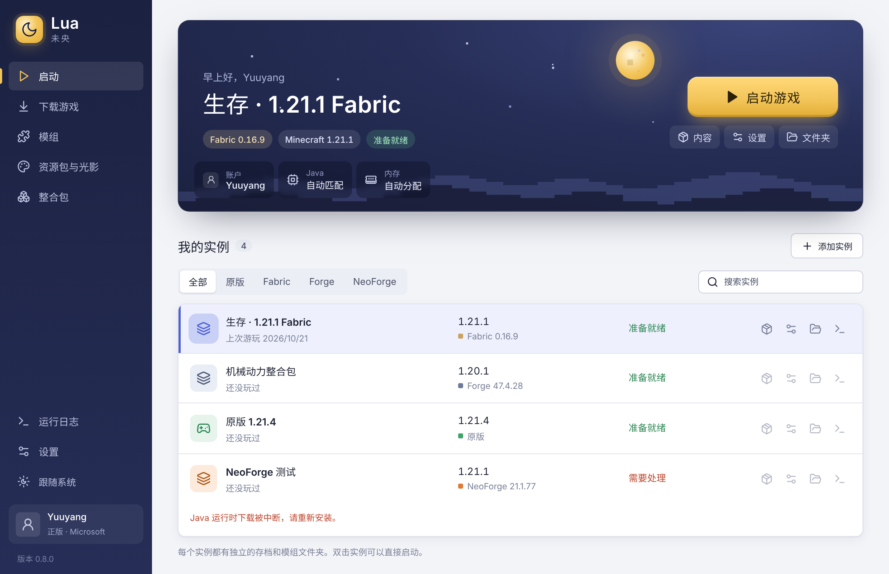

游戏版本与独立实例
安装现代原版、Fabric、Forge 与 NeoForge。每个实例有自己的存档、模组和配置，共享已校验的基础资源。
当前支持 Minecraft 1.20.1 起的正式版免费开源的桌面启动器
把版本、实例、模组与账户放在熟悉的位置。Lua · 未央，为 Minecraft Java 提供简洁实用的桌面界面。

0.8.0 起可以用购买了 Minecraft Java 版的 Microsoft 账户登录：在微软官方页面授权，Lua 验证游戏所有权与档案后即可启动。遇到问题欢迎在 GitHub 反馈。
查看登录说明与验证记录从独立实例到资源安装，围绕实际使用组织功能。
安装现代原版、Fabric、Forge 与 NeoForge。每个实例有自己的存档、模组和配置，共享已校验的基础资源。
当前支持 Minecraft 1.20.1 起的正式版按 19 个功能类别筛选模组，搜索 Modrinth / BBSMC，在线安装或导入 .mrpack。安装时检查版本与文件。
探测并优先复用本机 Java，缺失时从官方来源下载、校验并安装。按可用内存自动分配并保留余量，也可手动设置。
按官方清单自动准备所需 Java，也可手动选择运行时通过 Microsoft 官方网页授权。启动前验证 Java 版许可与档案，刷新信息由系统安全存储加密。
纯在线正版账户，头像显示你的皮肤.exe.dmg / .zip.AppImage在 0.8.0 Release 的 Assets 获取平台安装包，该发布提交已通过 Windows、macOS 和 Linux 的测试与构建。Java 会自动准备，也可手动选择；Lua 不捆绑游戏、模组或整合包。安装包尚未代码签名或公证，首次打开时系统可能需要确认。
功能状态和测试记录随代码更新，发布内容以仓库为准。
代码采用 MIT 许可。欢迎查看实现、报告问题或贡献改进。